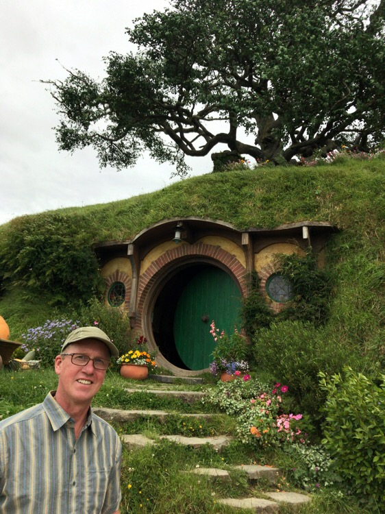

Is this Hobbiton or Nerdvana?

For as little as I wanted to go to the stinky spa yesterday, Jane wanted to go to Hobbiton today even less. She's not a big Lord of the Rings Fan. But our guide told us that nearly 30% of the people who visit Hobbiton have never seen even one …
more ...